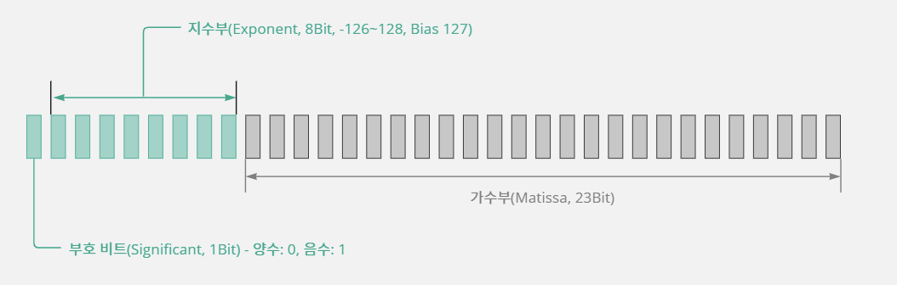

3. 자료형
3-1. 컴퓨터의 자료 기억 방식
데이터(정보)를 저장하는 공간, 메모리
- 컴퓨터는 주기억 장치로 램(RAM, Random Access Memory)를 사용하기 때문에 보통 메모리라고 하면 램을 의미한다.
- 메모리는 1바이트(Byte) 단위로 주소가 매겨져 있으며 운영체제마다 주소를 관리하는 방법이 조금씩 다르다.
- 하지만 주소가 1바이트 단위로 부여되어 있다고 해서 데이터가 꼭 1바이트 단위로 저장되어야 하는 것은 아니다.
- 1바이트 단위는 운영체제가 메모리를 관리하는 단위이고, 컴퓨터는 이보다 더 작은 비트 단위로 정보를 저장하거나 읽을 수 있다.
1비트는 0 또는 1을 저장할 수 있는 공간이다
- 메모리의 최소 저장 단위는 비트(Bit)이다.
- 1비트는 0, 1 중에서 한 개를 저장할 수 있는 크기이다.
저장 단위가 1비트 증가할 때마다 저장 단위는 2배로 늘어난다
- 1비트는 숫자 2개(0~1)중 하나,
- 2비트는 숫자 4개(0~3)중 하나,
- 3비트는 숫자 8개(0~7)중 하나를 저장할 수 있는 크기이다.
- 즉 1비트 증가할 때마다 저장 단위가 2의 배수만큼 늘어난다.
- 비트가 8개 모이면 새로운 단위를 사용하며 이것을 바이트(Byte)라고 한다.
- 1바이트는 비트 8개로 이루어지기 때문에 숫자 256개(0~255)중 하나를 저장할 수 있는 크기이다.
메모리 단위를 더 자세하게 알아보자
- 메모리 단위를 작은 것에서 큰 순서로 정리해 보면 다음과 같다.
- 1,024Byte = 1KB(킬로바이트, Kilo Byte)
- 1,024KB = 1MB(메가바이트, Mega Byte)
- 1,024MB = 1GB(기가바이트, Giga Byte)
- 1,024GB = 1TB(테라바이트, Tera Byte)
- 1,024TB = 1PB(페타바이트, Peta Byte)
- 1,024PB = 1EB(엑사바이트, Exa Byte)
부호 비트를 사용하여 양수와 음수를 구별한다
- 숫자는 음수도 있기 때문에 데이터에 음수가 들어 있다면 메모리에 데이터를 저장할 때 조금 다른 표현을 사용해야 한다.
- 1바이트를 기준으로 살펴보면 비트 9개에 모두 숫자를 저장하는 것이 아니라 비트 1개에는 음수 또는 양수인지의 상태를 저장하고 나머지 비트 7개에는 숫자를 저장한다.
- 여기에서 양수와 음수를 구별하는 비트를 부호 비트라고 한다.

- 부호를 표현하는 데 1비트를 사용했기 때문에 나머지 7비트에만 데이터를 저장한다.
- 7비트는 양수일 때 숫자 128개(0~127)중 하나,
- 음수일 때 숫자 128개(-128~-1)중 하나를 저장할 수 있는 크기이다.
- 즉 -128~127 사이의 숫자 중 하나를 저장한다.
- 0을 양수에 포함시켜서, 0이나 양수일 때는 0을 부호 비트에 저장한다.
- 음수 표현법은 2의 보수법과 관련있고, 자세한 내용은 [한 권으로 끝내는 컴퓨터 구조와 프로그래밍] 이라는 책 스터디를 통해 알아보겠다.
데이터를 저장할 때 메모리를 절약하려면?
- 컴퓨터의 CPU는 모든 데이터를 숫자로 인지하고 처리하기 때문에 문자도 숫자로 변경해주어야 한다.
- 데이터를 숫자로 변경해서 사용하면 일반적으로 유효 범위를 가지게 된다.
- 예를 들어 사람의 나이 정보를 저장하려고 한다면, 컴퓨터 메모리를 기준으로 1바이트는 0에서 255 사이의 값을 저장할 수 있기 때문에 1바이트 메모리 공간에 나이 데이터를 저장하면 된다는 결론이 나온다.
- 이렇게 데이터의 유효 범위를 예상하고 적합한 크기를 결정하는 것은 메모리에 데이터를 저장하는 데 필요한 가장 기본적인 작업이다.
- 요즘도 메모리를 절약하는 게 중요한가?
- 내 생각은 Yes 이다.
- 내 프로그래밍 철학은 Fast and Robust 이다.
3-2. 문자를 숫자로 표현하는 약속, 아스키코드
- 컴퓨터에 우리가 사용하는 데이터를 저장하려면 일단 문자를 숫자화시켜야 한다고 했는데
- 그러면 컴퓨터와 같은 기기들이 어떤 규칙으로 문자를 숫자로 변경하는지 알아보자.
아스키(ASCII)코드란?
- 아스키는 컴퓨터에서 문자를 숫자로 표현하기 위한 약속이다.
- ASCII, American Standard Code for Information Interchange
- 아스키는 1967년에 표준으로 제정되어 1986년에 마지막으로 개정되었다.
- 아스키는 초창기에 7비트 방식으로 인코딩(Encoding)되었기 때문에 출력 불가능한 제어문자 33개(0~32번)와 공백을 비롯한 출력 가능한 문자 95개로 이루어져 있다.
- 따라서 총 128개(8비트 중 7비트만 사용)의 코드로 구성된다.
- 인코딩이란 데이터를 약속한 형태의 숫자로 변경하는 것을 말한다.
- 7비트 방식으로 인코딩되었다는 것은 7비트 크기의 숫자로 변경되었다는 뜻이다.
- 하지만 컴퓨터가 발전하여 좀 더 다양한 표현이 필요해짐에 따라 8비트 인코딩을 사용하도록 확장되었다.
- 0~255 범위를 가지며 이 범위는 부호를 고려하지 않는 1바이트 메모리에 저장할 수 있다.
- 따라서 컴퓨터에서 문자가 아스키로 표현되었다면 1바이트 메모리에 저장하는 것이 가장 효율적이다.
3-3. 자료형의 종류
자료형은 왜 필요할까?
- 컴퓨터 메모리가 1바이트(Byte) 단위로 주소가 부여되어 있다고 해서 데이터를 저장하거나 읽을 때 1바이트 단위로만 사용해야 하는 것은 아니다.
- 자신이 사용할 데이터의 크기에 맞게 메모리(저장 공간)을 할당해서 사용하면 된다.
- 그래서 메모리를 사용할 때 몇 바이트의 메모리를 사용할 것인지를 명시해야 하는데, 이것을 데이터 타입(Data Type) 또는 자료형이라고 한다.
- 메모리 공간에서 프로그래머가 원하는 만큼의 크기(1byte, 2bytes, ⋯)를 배정해 주는 것을 '메모리를 할당한다'라고 한다.
- C 언어는 사용 빈도가 높은 자료형을 예약어로 제공(Built-in Data Type)하고, 나머지는 사용자가 만드러서 사용할 수 있는 문법(User-defined Data Type)을 제공한다.
- 데이터를 메모리에 저장하는 작업은 정해 놓은 단위로만 가능하다.
정수를 표현하는 자료형
- C 언어는 정수 값을 저장하는 데 세 가지 자료형,
- 즉 1바이트, 2바이트, 4바이트 크기의 자료형을 제공한다.
signed char: 부호가 있는 1바이트 저장 공간
signed char는 1바이트(8비트) 크기의 자료형이다.- 하지만 부호 있는 데이터를 처리하기 때문에 첫 1비트는 부호 비트로 사용하고 나머지 7비트에만 숫자를 저장한다.
- 부호 비트가 0이면 양수를 의미하고 총 128개의 숫자(0~127) 중 하나를 저장할 수 있다.
- 부호 비트가 1이면 음수를 의미하고 128개의 숫자(-128~-1) 중 하나를 저장할 수 있다.
- 따라서
signed char자료형은 -128~127의 숫자 중 하나를 저장할 수 있는 크기이다.
signed char temperature;
temperature = -2; // 영하 2℃를 temperature 변수에 저장함
- temperature 변수는 자료형이
signed char이므로 1바이트의 메모리 공간을 사용한다.
unsigned char: 부호가 없는 1바이트 저장 공간
unsigned char는 부호 비트 없이 1바이트(8비트) 전체를 숫자 저장 공간으로 사용하기 때문에 256개의 숫자(0~255) 중 하나를 저장할 수 있는 크기이다.
unsigned char age;
age = 52; // 나이 52살을 age 변수에 저장함
- 자료형으로
unsigned char를 사용했으므로 age 변수에는 255살까지 저장할 수 있다.
signed short int: 부호가 있는 2바이트 저장 공간
signed short int는 2바이트(16비트) 크기의 자료형이다.- 하지만 부호 있는 데이터를 처리하기 때문에 첫 1비트는 부호 비트로 사용하고 나머지 15비트에만 숫자를 저장한다.
- 따라서 부호 비트가 0이면 양수를 의미하고 215인 32,768개의 숫자(0~32,767)중 하나를 저장할 수 있다.
- 부호 비트가 1이면 음수를 이미하고 32,768개의 숫자(-32,768~-1)중 하나를 저장할 수 있다.
- 즉 -32,768~32,767이 숫자 중 하나를 저장할 수 있는 크기이다.
signed short int dday;
dday = -20; // D-Day가 20일 남았다고 dday라는 변수에 저장함
- 자료형으로
signed short int를 사용했으므로 변수 dday에는 -32,768~32,767의 정수 값을 지정할 수 있다.
unsigned short int: 부호가 없는 2바이트 저장 공간
unsigned short int는 2바이트(16비트) 전체를 숫자 저장 공간으로 사용하기 때문에 65,536개의 숫자(0~65,535)중 하나를 저장할 수 있다.
unsigned short int seconds;
seconds = 35000; // 3만 5000초를 seconds 변수에 저장함
- 자료형으로
unsigned short int를 사용했으므로 seconds 변수에는 0~65,525의 정수 값을 저장할 수 있다.
signed long int: 부호가 있는 4바이트 저장 공간
signed long int는 4바이트(32비트) 크기이지만 부호 있는 데이터를 처리하기 때문에 첫 1비트만 부호 비트로 사용하고 나머지 31비트에는 숫자를 저장한다.- 부호 비트가 0이면 양수인 231개의 숫자(0~231-1)중 하나를 저장할 수 있고,
- 부호 비트가 1이면 음수인 231개의 숫자(-231~-1)중 하나를 저장할 수 있다.
signed long int money;
money = 7000000; // 700만 원을 money 변수에 저장함
- 자료형으로
signed long int를 사용했으므로 money 변수에는 -2,147,483,648~2,147,483,647의 정수 값을 저장할 수 있다.
unsigned long int: 부호가 없는 4바이트 저장 공간
unsigned long int는 4바이트(32비트) 전체를 숫자 저장 공간으로 사용하기 때문에 232인 4,294,967,296개의 숫자(0~4,294,967,295)중 하나를 저장할 수 있는 크기이다.
unsigned long int time_seconds;
// 1970년 1월 1일부터 현재까지 흐른 시간을 초 단위로 환산한 값을 time_seconds 변수에 저장함
time_seconds = 1453100624;
-
자료형으로
unsigned long int를 사용했으므로 time_seconds 변수에는 0~4,294,967,295의 정수 값을 저장할 수 있다. -
정수 형식의 자료형을 정리해 보면,
char자료형과int자료형이 있다. -
이것을 부호의 존재 여부에 따라 나눌 수 있고(
signed/unsigned), -
int의 경우에는 조금 더 작은 메모리라는 뜻의short키워드 또는 조금 더 큰 메모리라는 뜻의long키워드를 붙여서 다양하게 표현할 수 있다.
정수 자료형은 주로 생략한 형태를 쓴다
- 실제 프로그래밍을 할 때는 위에서 배운 자료형대로
signed char,unsigned long int처럼 전체 예약어를 다 적지 않고 생략된 예약어를 사용한다. - 보통
signed,long을 생략한다.
실수를 표현하는 자료형
- 실수를 표현하는 부동소수점 방식에는
float와double이 있다.
컴퓨터에서 실수를 표현하는 방식, 부동소수점
- 부동소수점(Floating-point) 표현 방식이란 실수를 표현할 때 소수점의 위치를 고정하지 않고 소수점의 위치를 나타내는 수를 따로 적는 방식이다.
- 부동소수점 표현 방식에 따라 실수 값을 메모리에 저장하면 CPU가 하드웨어적으로 연산해 주기 때문에 프로그래머가 신경 쓸 필요 없다.
- 실수 형식은 복잡한 연산 과정을 거치기 때문에 정수에 비해 처리 속도가 많이 떨어진다.
- 실수 312.567을 3.12567x102이라고 표현하면 저장해야 할 정보가 정확하게 둘로 나뉘어져 편리하다.
- 3.12567 부분을 가수부,
- 102에서 2를 지수부라고 한다.
- C 언어에서는 이 표현을 3.12567E2라고 적는다.
- 프로그래밍 언어에서 사용하는 실수는 IEEE 754 규약에 정의된 부동소수점 표현이다.
- C 언어에서는 32비트(4바이트) 크기의 부동소수점 표현(Single Precision)을 사용하는
float자료형과 64비트(8바이트) 크기의 부동소수점 표현(Double Precision)을 사용하는double자료형을 제공한다.
32비트 부동소수점 표현: float
- 이 자료형은 메모리 공간을 가수부와 지수부로 나누어 실수 형태의 값을 저장하며 그 형식은 다음과 같다.

- 저장할 수 있는 값의 범위는 1.2E-38~3.4E38이다.
- 1.2E-38은 2-126값을 반올림한 값이고,
- 3.4E38은 2128값을 반올림한 값이다.
- 지수부의 범위는 왜 2-126부터 시작할까?
- 32비트를 기준으로 할 때, 모든 지수 비트가 0인 -127은 2-127값이 그대로 사용되지 않는다.
- 2-127은 오류나 특정한 상황을 표시하는 값으로만 사용된다.
- 반면에 모든 지수 비트가 1인 128의 경우에는 특정한 상황을 표시하기도 하지만 2128값 그대로를 의미하기도 한다.
- 따라서
float형의 범위가 1.2E-38~3.4E38이 되는 것이다.
Bias가 무엇인가?
- 일반 정수는 최상위 비트 값이 0이면 양수이고, 1이면 음수라고 정해 놓고 부호를 구별한다.
- 하지만 실수 표현에서 지수 부분의 값은 음수나 양수 표현을 최상위 비트 값을 기준으로 하지 않고 정해진 BIAS(편향 지수) 값을 기준으로 하고 있다.
- 따라서 BIAS 값이 127이라면 127이 0이라는 뜻이다.
float pi;
pi = 3.14;
- 32비트 기반인
float는 저장 범위는int와 같지만 정수부와 소수부를 모두 저장해야 하기 때문에 소수점 이하 숫자가 6자리밖에 안 된다.
float pi;
pi = 3.14159264;
- 이렇게 소수점 이하에 6개보다 많은 숫자를 쓰고 pi 변수에 저장한 후 출력해 보면, 6자리를 넘는 숫자부터는 잘못된 값을 출력한다.
출력값: 3.141592741
- 따라서 소수점 이하 숫자를 6자리 이상 사용하려면 64비트 기반의
double자료형을 사용해야 한다.
64비트 부동소수점 표현: double
- 이 자료형도 메모리 공간을 가수부와 지수부로 나누어 실수 형태의 값을 저장하며 그 형식은 다음과 같다.

- 값의 저장 범위는 2.2E-308~1.8E308이다.
- 이 자료형은 64비트를 기반으로 하기 때문에 소수점 이하 14자리까지 안전하게 저장할 수 있다.
실수는 어떻게 메모리에 저장될까?
IEEE 754 에 대한 자세한 내용은 아래의 링크를 참조하자.
http://tipssoft.com/bulletin/board.php?bo_table=FAQ&wr_id=177